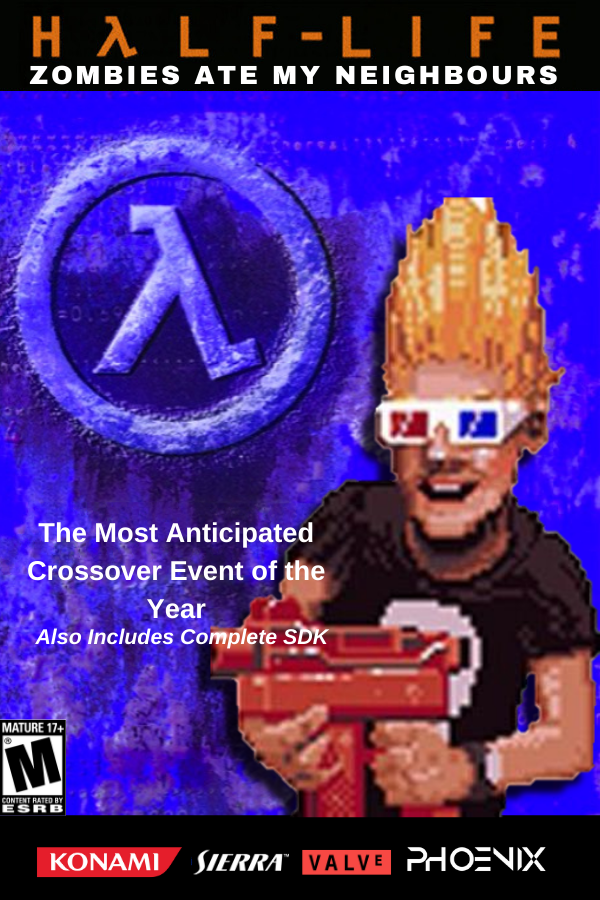

The Main Project In the Works
Half-Life: Zombies Ate My Neighbours


What people are saying:
I honestly can't wait for this mod.
Nugget_Zone on Steam
Nugget_Zone on Steam
Can't wait for it.
Kleiner Studios on Steam
Kleiner Studios on Steam
Can't wait to see more! Both this and the DOOM version of ZAMN are super exciting.
Astraxis on DBolical
Astraxis on DBolical
- Play as Zeke in the most ambitious crossover event of the millenium
- Travel across the ZAMN world and Black Mesa
- Hectic battles with enemies from ZAMN, Xen and the HECU
- Co-operate with allies
- Releasing November 21st, 2021
The Resonance Cascade has opened a highway between Black Mesa, New Mexico and Xen, The Border World. Little did Black Mesa and Xen know that that highway also had a roundabout with three exits — the first exit being Xen, the second being Black Mesa, and the third being the Zombies Ate My Neighbours world. You play as Zeke. You live in Hell on Earth, constantly sacrificing yourself to save the neighbours from the zombies. Suddenly, one day, you must decide — stay in your horrible world, fighting an endless swarm of zombies, or go to a different one. You are unconsciously forced to move to the new world.
